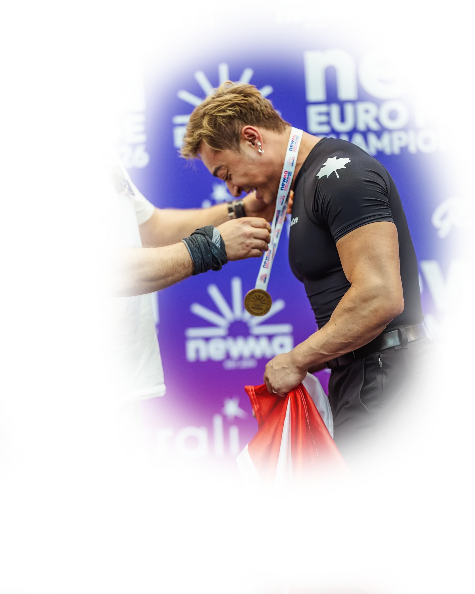

Pick your language.
Choose now, or wait for the softly highlighted option.
English is selected. Entering in 4 seconds.
Move, tap, type, or scroll to pause automatic entry.

Choose now, or wait for the softly highlighted option.
Move, tap, type, or scroll to pause automatic entry.